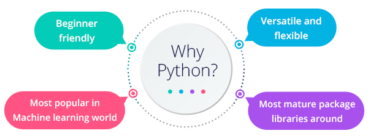

ประวัติความเป็นมาของ ภาษา Python ไพทอน
ภาษาไพทอน (Python programming language) เป็นภาษาโปรแกรมแบบอินเทอร์พรีเตอร์ ที่สร้างโดย กีโด ฟาน รอสซัม (Guido van Rossum) ในพ.ศ. 2533 ปัจจุบันดูแลโดย มูลนิธิซอฟต์แวร์ไพทอน
ทำไมต้องเป็น Python
Python เป็นภาษาที่ถูกออกแบบเพื่อให้เรียนรู้ อ่าน ใช้งานได้ง่ายตั้งแต่เริ่มต้นออกแบบ นอกจากนี้ Python ยังเป็นภาษาในตระกูล Interpreted Language ซึ่งมีโครงสร้างที่ไม่ซับซ้อน กล่าวคือ เป็นภาษาที่ใช้เพื่อเขียนไฟล์คำสั่ง และจึงนำไฟล์คำสั่งไปใช้งาน แตกต่างจาก Compiled Language ที่เมื่อเขียนโค้ดเสร็จ จะต้องผ่านกระบวนการ Compile เพื่อสร้างโปรแกรมจากคำสั่ง ก่อนจะนำโปรแกรมไปใช้งาน โครงสร้างนี้ ประกอบกับชุดคำสั่งสำเร็จรูปที่ช่วยให้การประยุกต์ใช้ทำได้หลากหลาย ทำได้แทบทุกอย่าง ทำให้ Python กลายเป็นภาษาที่ได้รับความนิยมในการเป็นภาษาแรกในการเรียนการเขียนโปรแกรม และการสร้างโปรแกรมระดับย่อย ช่วยทำงานต่างๆ ให้ง่ายขึ้น
Python ทำอะไรได้บ้าง?
ความหลากหลายของชุดคำสั่งสำเร็จรูป การออกแบที่มือใหม่เรียนรู้ได้ง่ายและโครงสร้างที่สามารถใช้สร้างโปรแกรมเล็กๆ ได้ง่าย ทำให้ Pythonเป็นภาษาที่สามารถใช้งานได้หลากหลายมากที่สุดภาษาหนึ่ง

วิธีการติดตั้ง Python
Download จาก Web: https://www.python.org


อยากลองเขียน Python จะใข้เว็บไหนดี?
ลองเว็บนี้เลย Google Colab

รู้จักกับ Visual Studio Code (วิชวล สตูดิโอ โค้ด) โปรแกรมฟรีจากค่ายไมโครซอฟท์
Visual Studio Code หรือ VSCode เป็นโปรแกรม Code Editor ที่ใช้ในการแก้ไขและปรับแต่งโค้ด จากค่ายไมโครซอฟท์ มีการพัฒนาออกมาในรูปแบบของ OpenSource จึงสามารถนำมาใช้งานได้แบบฟรี ๆ ที่ต้องการความเป็นมืออาชีพ ซึ่ง Visual Studio Code นั้น เหมาะสำหรับนักพัฒนาโปรแกรมที่ต้องการใช้งานข้ามแพลตฟอร์ม รองรับการใช้งานทั้งบน Windows, macOS และ Linux สนับสนุนทั้งภาษา JavaScript, TypeScript และ Node.js สามารถเชื่อมต่อกับ Git ได้ นำมาใช้งานได้ง่ายไม่ซับซ้อน มีเครื่องมือส่วนขยายต่าง ๆ ให้เลือกใช้อย่างมากมาก ไม่ว่าจะเป็น 1.การเปิดใช้งานภาษาอื่น ๆ ทั้ง ภาษา C++, C#, Java, Python, PHP หรือ Go 2.Themes 3.Debugger 4.Commands เป็นต้น
สามารถดาวน์โหลดได้ที่ https://code.visualstudio.com
Github คืออะไร
GitHub คือ website Git (version control repository) ที่อยู่บน internet มีการทำงานแบบเดียวกับ Git เลย แต่สามารถเข้าถึงข้อมูลและจัดการไปผ่าน web โดยไม่ต้องเสียเงิน หรือลงทุกตั้ง server เพื่อติดตั้ง Git เองเลย แต่ code project ทั้งหมดจะถูกแจกจ่ายให้คนอื่นๆสามารถเห็นได้ด้วย
Github มีประโยชน์อย่างไร
- ตรวจสอบเวอร์ชันย้อนหลังของ source code ได้
- ช่วยในการพัฒนาซอฟต์แวร์เป็นทีม
สถานะของ Source Code ที่เก็บอยู่ในระบบของ Git นั้นมีดังนี้
- Untracked เป็นสถานะที่ Source Code ถูกเพิ่มเข้ามาใหม่และยังไม่ได้ถูกเก็บไว้ในระบบของ Git
- Working Directory เป็นสถานะที่กำลังมีการเปลี่ยนแปลงหรือแก้ไข Source Code หรืออาจจะเรียกสถานะนี้ว่า Modified
- Staged เป็นสถานะที่ Source Code กำลังเตรียมที่จะ Commit เพื่อยืนยันการเปลี่ยนแปลงก่อนที่จะเก็บลงในสถานะ Local Repository
- Local Repository เป็นสถานะที่มีการเก็บบันทึกข้อมูลการเปลี่ยนแปลงของ Source Code ลงไปที่ Git Repository ที่เป็น Local (ที่เครื่องตัวเอง)
- Remote Repository เป็นสถานะที่มีการเก็บบันทึกข้อมูลการเปลี่ยนแปลงของ Source Code ลงไปที่ Git Repository ที่เป็น Hosting (ที่เครื่องเซิร์ฟเวอร์)
Python Print Command
Print Command
- Print String
- Print Numeric
- Print String + Numeric
- Print String + String
- Print Numeric + Numeric
Print String
String เป็นลำดับของตัวอักษรหลายตัวเรียงต่อกัน ซึ่งในภาษา Python นั้นการที่จะประกาศ String ค่าของมันจะอยู่ในเครื่องหมาย Double quote หรือ Single quote เท่านั้น มาดูตัวอย่างการประกาศตัวแปรของ String
Print Numeric
Python Numbers ข้อมูลชนิดตัวเลขในภาษาไพธอน มีอยู่ 3 ชนิดด้วยกัน ดังนี้
- int เก็บค่าตัวเลขจำนวนเต็มบวกและจำนวนเต็มลบ
- float เก็บค่าตัวเลขที่มีจุดทศนิยม
- complex เก็บค่าตัวเลขจำนวนจินตภาพ ที่มีตัวอักษร ‘j’ กำกับมาด้วย

Print String + Numeric
Print String + Numeric ใช้เครื่องหมาย Comma ตามด้วยสตริงหรือตัวเลข *** print('numeric',"string") or print ("8,'ABC', 96, 74, 'EFG'") ***
Print String + String
Print String + String ใช้เครื่องหมาย Comma หรือ + ขั้นระหว่างข้อความ

Print Numeric + Numeric
Print Numeric + Numeric ใช้เครื่องหมาย Comma ระหว่างข้อความ

Input
คำสั่ง input เป็นคำสั่งสำหรับรับข้อมูลจากแป้นพิมพ์

ตัวอย่างเช่น